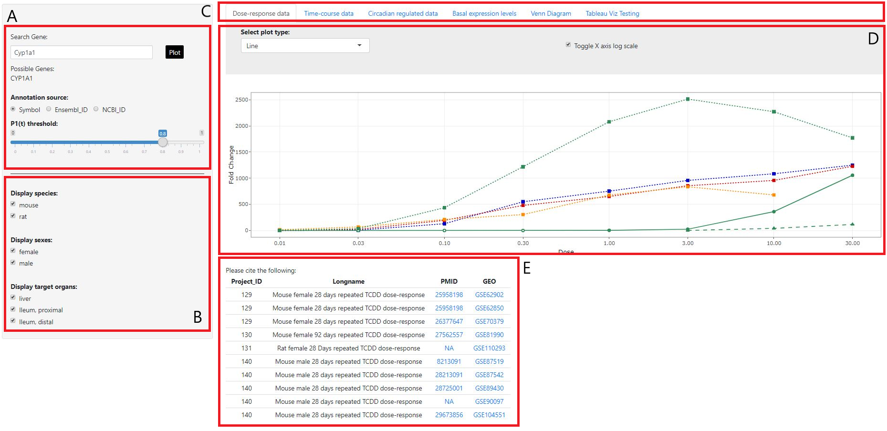

A. Here is where you can select which gene to investigate. A list of potential searches will appear below the search
bar as you type, and are dependent on the annotation source you choose. Additionally, you can adjust the slider to
fit the P1t threshold you wish to apply. Once the parameters are as you want them, simply click the 'Plot' button
and the figure corresponding to your inputs will be displayed.
B. Here you can choose which data you wish to plot. By checking and unchecking these boxes, the plot on the right will
automatically adjust to display only the species, sex, and organ data you wish to view.
C. Here you can choose how your data will be displayed graphically. The dose-response figure describes fold change as a function
of treatment dose concentration. Time-course will show fold change as well, but as a function of time after the dose was
administered. The circadian tab contains two figures. One describes how fold change of the selected gene varies over a 48 hour
circadian cycle, and the other plots normalized signal for both the treatment and vehicle replicates for the given gene, also over
a 48 hour circadian cycle. The basal expression levels tab gives statistical analysis of the distribution of normalized signal data,
grouped by study, sex, and or species. And finally, the venn diagram tab allows the user to select a number of projects and a threshold
P1t value, and the figure will display how many genes are in each of the selected projects that exceed that threshold.
Additionally, the plot type can be changed using the drop down menu directly below the tabs and the x axis scale can be toggled between
log and linear.
D. This is where the main plot is displayed. Hovering over the points will provide more information about that point such as the project name,
and the exact value it represents.
E. This table provides additional information for each project described in the plot above. By clicking on te PMID or GEO ID numbers, a
link to that project will be loaded in a new browser tab.
